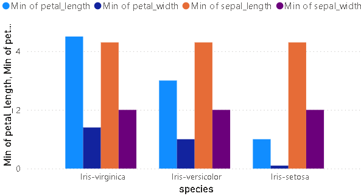
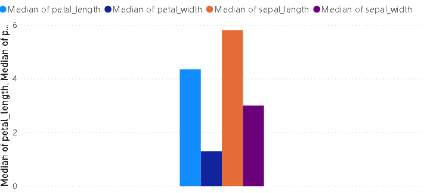

Data Understanding#
Dalam proyek dunia nyata, data jarang sekali tersedia dalam satu file yang bersih. Seringkali, data tersebar di berbagai sistem, database, atau bahkan lokasi geografis—sebuah fenomena yang dikenal sebagai data silos. Dengan data petal di MySQL dan sepal di PostgreSQL (keduanya di platform Aiven).
1. Konfigurasi#
Menggunakan file .env untuk menyimpan informasi sensitif di luar script Python. Pustaka python-dotenv akan digunakan untuk memuat variabel-variabel ini ke dalam lingkungan kerja.
Implementasi:
Buat sebuah file bernama
.envdi direktori proyek.Isi file tersebut dengan format berikut, menggunakan detail koneksi dari dashboard Aiven Anda:
# Kredensial Aiven untuk PostgreSQL PG_USER="username_pg" PG_PASSWORD="password_pg" PG_HOST="host.aivencloud.com" PG_PORT="12345" PG_DBNAME="database_name_pg" # Kredensial Aiven untuk MySQL MYSQL_USER="username_mysql" MYSQL_PASSWORD="password_mysql" MYSQL_HOST="host.aivencloud.com" MYSQL_PORT="54321" MYSQL_DBNAME="database_name_mysql"
2. Koneksi Database#
Untuk berinteraksi dengan berbagai jenis database SQL dari Python secara seragam, akan menggunakan SQLAlchemy, psycopg2-binary, dan mysql-connector-python. Pustaka ini menyediakan sebuah Object-Relational Mapper (ORM) dan engine koneksi yang mengabstraksi detail spesifik dari setiap dialek SQL.
Membuat dua “engine” koneksi terpisah. Setiap engine mengelola pool koneksi ke databasenya masing-masing, memungkinkan eksekusi kueri yang efisien.
Implementasi (Kode Python):
import os
import pandas as pd
from dotenv import load_dotenv
from sqlalchemy import create_engine, text
# Muat variabel dari file .env ke dalam environment
load_dotenv()
# Koneksi ke PostgreSQL untuk data Sepal
try:
pg_uri = (
f"postgresql+psycopg2://{os.getenv('PG_USER')}:{os.getenv('PG_PASSWORD')}"
f"@{os.getenv('PG_HOST')}:{os.getenv('PG_PORT')}/{os.getenv('PG_DBNAME')}"
)
pg_engine = create_engine(pg_uri)
print(" Koneksi ke PostgreSQL berhasil dibangun.")
except Exception as e:
print(f" Gagal terkoneksi ke PostgreSQL: {e}")
# Koneksi ke MySQL untuk data Petal
try:
mysql_uri = (
f"mysql+mysqlconnector://{os.getenv('MYSQL_USER')}:{os.getenv('MYSQL_PASSWORD')}"
f"@{os.getenv('MYSQL_HOST')}:{os.getenv('MYSQL_PORT')}/{os.getenv('MYSQL_DBNAME')}"
)
mysql_engine = create_engine(mysql_uri)
print(" Koneksi ke MySQL berhasil dibangun.")
except Exception as e:
print(f" Gagal terkoneksi ke MySQL: {e}")
Koneksi ke PostgreSQL berhasil dibangun.
Koneksi ke MySQL berhasil dibangun.
Kode di atas menggunakan f-string untuk membangun URI koneksi secara dinamis dari variabel lingkungan. Penggunaan blok try...except adalah praktik yang baik untuk menangani potensi kegagalan koneksi secara elegan.
3. Ekstraksi data#
Dengan engine yang sudah siap, kini bisa mengeksekusi kueri untuk menarik data dan kemudian menggabungkannya.
Menggunakan fungsi pd.read_sql dari pandas yang sangat efisien, yang mengambil kueri SQL dan sebuah engine koneksi sebagai input, lalu langsung mengembalikan hasilnya sebagai DataFrame. Kedua tabel memiliki kolom kunci yang sama (misalnya, id) untuk proses penggabungan (join).
Implementasi (Kode Python):
# nama tabel adalah 'sepal_data' di PostgreSQL dan 'petal_data' di MySQL
query_sepal = text("SELECT id, sepal_length, sepal_width, species FROM sepal_data")
query_petal = text("SELECT id, petal_length, petal_width FROM petal_data")
# Eksekusi kueri dan muat ke DataFrame
sepal_df = pd.read_sql(query_sepal, pg_engine)
petal_df = pd.read_sql(query_petal, mysql_engine)
print("Data Sepal")
print(sepal_df.to_string())
print("\nData Petal")
print(petal_df.to_string())
# Gabungkan (merge) kedua DataFrame berdasarkan kunci primer 'id'
# Menggunakan 'inner join' untuk memastikan hanya baris yang cocok di kedua tabel yang diambil
iris_df = pd.merge(sepal_df, petal_df, on='id', how='inner')
print("\n Dataset Iris")
print(iris_df.to_string())
Data Sepal
id sepal_length sepal_width species
0 1 5.1 3.5 Iris-setosa
1 2 4.9 3.0 Iris-setosa
2 3 4.7 3.2 Iris-setosa
3 4 4.6 3.1 Iris-setosa
4 5 5.0 3.6 Iris-setosa
5 6 5.4 3.9 Iris-setosa
6 7 4.6 3.4 Iris-setosa
7 8 5.0 3.4 Iris-setosa
8 9 4.4 2.9 Iris-setosa
9 10 4.9 3.1 Iris-setosa
10 11 5.4 3.7 Iris-setosa
11 12 4.8 3.4 Iris-setosa
12 13 4.8 3.0 Iris-setosa
13 14 4.3 3.0 Iris-setosa
14 15 5.8 4.0 Iris-setosa
15 16 5.7 4.4 Iris-setosa
16 17 5.4 3.9 Iris-setosa
17 18 5.1 3.5 Iris-setosa
18 19 5.7 3.8 Iris-setosa
19 20 5.1 3.8 Iris-setosa
20 21 5.4 3.4 Iris-setosa
21 22 5.1 3.7 Iris-setosa
22 23 4.6 3.6 Iris-setosa
23 24 5.1 3.3 Iris-setosa
24 25 4.8 3.4 Iris-setosa
25 26 5.0 3.0 Iris-setosa
26 27 5.0 3.4 Iris-setosa
27 28 5.2 3.5 Iris-setosa
28 29 5.2 3.4 Iris-setosa
29 30 4.7 3.2 Iris-setosa
30 31 4.8 3.1 Iris-setosa
31 32 5.4 3.4 Iris-setosa
32 33 5.2 4.1 Iris-setosa
33 34 5.5 4.2 Iris-setosa
34 35 4.9 3.1 Iris-setosa
35 36 5.0 3.2 Iris-setosa
36 37 5.5 3.5 Iris-setosa
37 38 4.9 3.1 Iris-setosa
38 39 4.4 3.0 Iris-setosa
39 40 5.1 3.4 Iris-setosa
40 41 5.0 3.5 Iris-setosa
41 42 4.5 2.3 Iris-setosa
42 43 4.4 3.2 Iris-setosa
43 44 5.0 3.5 Iris-setosa
44 45 5.1 3.8 Iris-setosa
45 46 4.8 3.0 Iris-setosa
46 47 5.1 3.8 Iris-setosa
47 48 4.6 3.2 Iris-setosa
48 49 5.3 3.7 Iris-setosa
49 50 5.0 3.3 Iris-setosa
50 51 7.0 3.2 Iris-versicolor
51 52 6.4 3.2 Iris-versicolor
52 53 6.9 3.1 Iris-versicolor
53 54 5.5 2.3 Iris-versicolor
54 55 6.5 2.8 Iris-versicolor
55 56 5.7 2.8 Iris-versicolor
56 57 6.3 3.3 Iris-versicolor
57 58 4.9 2.4 Iris-versicolor
58 59 6.6 2.9 Iris-versicolor
59 60 5.2 2.7 Iris-versicolor
60 61 5.0 2.0 Iris-versicolor
61 62 5.9 3.0 Iris-versicolor
62 63 6.0 2.2 Iris-versicolor
63 64 6.1 2.9 Iris-versicolor
64 65 5.6 2.9 Iris-versicolor
65 66 6.7 3.1 Iris-versicolor
66 67 5.6 3.0 Iris-versicolor
67 68 5.8 2.7 Iris-versicolor
68 69 6.2 2.2 Iris-versicolor
69 70 5.6 2.5 Iris-versicolor
70 71 5.9 3.2 Iris-versicolor
71 72 6.1 2.8 Iris-versicolor
72 73 6.3 2.5 Iris-versicolor
73 74 6.1 2.8 Iris-versicolor
74 75 6.4 2.9 Iris-versicolor
75 76 6.6 3.0 Iris-versicolor
76 77 6.8 2.8 Iris-versicolor
77 78 6.7 3.0 Iris-versicolor
78 79 6.0 2.9 Iris-versicolor
79 80 5.7 2.6 Iris-versicolor
80 81 5.5 2.4 Iris-versicolor
81 82 5.5 2.4 Iris-versicolor
82 83 5.8 2.7 Iris-versicolor
83 84 6.0 2.7 Iris-versicolor
84 85 5.4 3.0 Iris-versicolor
85 86 6.0 3.4 Iris-versicolor
86 87 6.7 3.1 Iris-versicolor
87 88 6.3 2.3 Iris-versicolor
88 89 5.6 3.0 Iris-versicolor
89 90 5.5 2.5 Iris-versicolor
90 91 5.5 2.6 Iris-versicolor
91 92 6.1 3.0 Iris-versicolor
92 93 5.8 2.6 Iris-versicolor
93 94 5.0 2.3 Iris-versicolor
94 95 5.6 2.7 Iris-versicolor
95 96 5.7 3.0 Iris-versicolor
96 97 5.7 2.9 Iris-versicolor
97 98 6.2 2.9 Iris-versicolor
98 99 5.1 2.5 Iris-versicolor
99 100 5.7 2.8 Iris-versicolor
100 101 6.3 3.3 Iris-virginica
101 102 5.8 2.7 Iris-virginica
102 103 7.1 3.0 Iris-virginica
103 104 6.3 2.9 Iris-virginica
104 105 6.5 3.0 Iris-virginica
105 106 7.6 3.0 Iris-virginica
106 107 4.9 2.5 Iris-virginica
107 108 7.3 2.9 Iris-virginica
108 109 6.7 2.5 Iris-virginica
109 110 7.2 3.6 Iris-virginica
110 111 6.5 3.2 Iris-virginica
111 112 6.4 2.7 Iris-virginica
112 113 6.8 3.0 Iris-virginica
113 114 5.7 2.5 Iris-virginica
114 115 5.8 2.8 Iris-virginica
115 116 6.4 3.2 Iris-virginica
116 117 6.5 3.0 Iris-virginica
117 118 7.7 3.8 Iris-virginica
118 119 7.7 2.6 Iris-virginica
119 120 6.0 2.2 Iris-virginica
120 121 6.9 3.2 Iris-virginica
121 122 5.6 2.8 Iris-virginica
122 123 7.7 2.8 Iris-virginica
123 124 6.3 2.7 Iris-virginica
124 125 6.7 3.3 Iris-virginica
125 126 7.2 3.2 Iris-virginica
126 127 6.2 2.8 Iris-virginica
127 128 6.1 3.0 Iris-virginica
128 129 6.4 2.8 Iris-virginica
129 130 7.2 3.0 Iris-virginica
130 131 7.4 2.8 Iris-virginica
131 132 7.9 3.8 Iris-virginica
132 133 6.4 2.8 Iris-virginica
133 134 6.3 2.8 Iris-virginica
134 135 6.1 2.6 Iris-virginica
135 136 7.7 3.0 Iris-virginica
136 137 6.3 3.4 Iris-virginica
137 138 6.4 3.1 Iris-virginica
138 139 6.0 3.0 Iris-virginica
139 140 6.9 3.1 Iris-virginica
140 141 6.7 3.1 Iris-virginica
141 142 6.9 3.1 Iris-virginica
142 143 5.8 2.7 Iris-virginica
143 144 6.8 3.2 Iris-virginica
144 145 6.7 3.3 Iris-virginica
145 146 6.7 3.0 Iris-virginica
146 147 6.3 2.5 Iris-virginica
147 148 6.5 3.0 Iris-virginica
148 149 6.2 3.4 Iris-virginica
149 150 5.9 3.0 Iris-virginica
Data Petal
id petal_length petal_width
0 1 1.4 0.2
1 2 1.4 0.2
2 3 1.3 0.2
3 4 1.5 0.2
4 5 1.4 0.2
5 6 1.7 0.4
6 7 1.4 0.3
7 8 1.5 0.2
8 9 1.4 0.2
9 10 1.5 0.1
10 11 1.5 0.2
11 12 1.6 0.2
12 13 1.4 0.1
13 14 1.1 0.1
14 15 1.2 0.2
15 16 1.5 0.4
16 17 1.3 0.4
17 18 1.4 0.3
18 19 1.7 0.3
19 20 1.5 0.3
20 21 1.7 0.2
21 22 1.5 0.4
22 23 1.0 0.2
23 24 1.7 0.5
24 25 1.9 0.2
25 26 1.6 0.2
26 27 1.6 0.4
27 28 1.5 0.2
28 29 1.4 0.2
29 30 1.6 0.2
30 31 1.6 0.2
31 32 1.5 0.4
32 33 1.5 0.1
33 34 1.4 0.2
34 35 1.5 0.1
35 36 1.2 0.2
36 37 1.3 0.2
37 38 1.5 0.1
38 39 1.3 0.2
39 40 1.5 0.2
40 41 1.3 0.3
41 42 1.3 0.3
42 43 1.3 0.2
43 44 1.6 0.6
44 45 1.9 0.4
45 46 1.4 0.3
46 47 1.6 0.2
47 48 1.4 0.2
48 49 1.5 0.2
49 50 1.4 0.2
50 51 4.7 1.4
51 52 4.5 1.5
52 53 4.9 1.5
53 54 4.0 1.3
54 55 4.6 1.5
55 56 4.5 1.3
56 57 4.7 1.6
57 58 3.3 1.0
58 59 4.6 1.3
59 60 3.9 1.4
60 61 3.5 1.0
61 62 4.2 1.5
62 63 4.0 1.0
63 64 4.7 1.4
64 65 3.6 1.3
65 66 4.4 1.4
66 67 4.5 1.5
67 68 4.1 1.0
68 69 4.5 1.5
69 70 3.9 1.1
70 71 4.8 1.8
71 72 4.0 1.3
72 73 4.9 1.5
73 74 4.7 1.2
74 75 4.3 1.3
75 76 4.4 1.4
76 77 4.8 1.4
77 78 5.0 1.7
78 79 4.5 1.5
79 80 3.5 1.0
80 81 3.8 1.1
81 82 3.7 1.0
82 83 3.9 1.2
83 84 5.1 1.6
84 85 4.5 1.5
85 86 4.5 1.6
86 87 4.7 1.5
87 88 4.4 1.3
88 89 4.1 1.3
89 90 4.0 1.3
90 91 4.4 1.2
91 92 4.6 1.4
92 93 4.0 1.2
93 94 3.3 1.0
94 95 4.2 1.3
95 96 4.2 1.2
96 97 4.2 1.3
97 98 4.3 1.3
98 99 3.0 1.1
99 100 4.1 1.3
100 101 6.0 2.5
101 102 5.1 1.9
102 103 5.9 2.1
103 104 5.6 1.8
104 105 5.8 2.2
105 106 6.6 2.1
106 107 4.5 1.7
107 108 6.3 1.8
108 109 5.8 1.8
109 110 6.1 2.5
110 111 5.1 2.0
111 112 5.3 1.9
112 113 5.5 2.1
113 114 5.0 2.0
114 115 5.1 2.4
115 116 5.3 2.3
116 117 5.5 1.8
117 118 6.7 2.2
118 119 6.9 2.3
119 120 5.0 1.5
120 121 5.7 2.3
121 122 4.9 2.0
122 123 6.7 2.0
123 124 4.9 1.8
124 125 5.7 2.1
125 126 6.0 1.8
126 127 4.8 1.8
127 128 4.9 1.8
128 129 5.6 2.1
129 130 5.8 1.6
130 131 6.1 1.9
131 132 6.4 2.0
132 133 5.6 2.2
133 134 5.1 1.5
134 135 5.6 1.4
135 136 6.1 2.3
136 137 5.6 2.4
137 138 5.5 1.8
138 139 4.8 1.8
139 140 5.4 2.1
140 141 5.6 2.4
141 142 5.1 2.3
142 143 5.1 1.9
143 144 5.9 2.3
144 145 5.7 2.5
145 146 5.2 2.3
146 147 5.0 1.9
147 148 5.2 2.0
148 149 5.4 2.3
149 150 5.1 1.8
Dataset Iris
id sepal_length sepal_width species petal_length petal_width
0 1 5.1 3.5 Iris-setosa 1.4 0.2
1 2 4.9 3.0 Iris-setosa 1.4 0.2
2 3 4.7 3.2 Iris-setosa 1.3 0.2
3 4 4.6 3.1 Iris-setosa 1.5 0.2
4 5 5.0 3.6 Iris-setosa 1.4 0.2
5 6 5.4 3.9 Iris-setosa 1.7 0.4
6 7 4.6 3.4 Iris-setosa 1.4 0.3
7 8 5.0 3.4 Iris-setosa 1.5 0.2
8 9 4.4 2.9 Iris-setosa 1.4 0.2
9 10 4.9 3.1 Iris-setosa 1.5 0.1
10 11 5.4 3.7 Iris-setosa 1.5 0.2
11 12 4.8 3.4 Iris-setosa 1.6 0.2
12 13 4.8 3.0 Iris-setosa 1.4 0.1
13 14 4.3 3.0 Iris-setosa 1.1 0.1
14 15 5.8 4.0 Iris-setosa 1.2 0.2
15 16 5.7 4.4 Iris-setosa 1.5 0.4
16 17 5.4 3.9 Iris-setosa 1.3 0.4
17 18 5.1 3.5 Iris-setosa 1.4 0.3
18 19 5.7 3.8 Iris-setosa 1.7 0.3
19 20 5.1 3.8 Iris-setosa 1.5 0.3
20 21 5.4 3.4 Iris-setosa 1.7 0.2
21 22 5.1 3.7 Iris-setosa 1.5 0.4
22 23 4.6 3.6 Iris-setosa 1.0 0.2
23 24 5.1 3.3 Iris-setosa 1.7 0.5
24 25 4.8 3.4 Iris-setosa 1.9 0.2
25 26 5.0 3.0 Iris-setosa 1.6 0.2
26 27 5.0 3.4 Iris-setosa 1.6 0.4
27 28 5.2 3.5 Iris-setosa 1.5 0.2
28 29 5.2 3.4 Iris-setosa 1.4 0.2
29 30 4.7 3.2 Iris-setosa 1.6 0.2
30 31 4.8 3.1 Iris-setosa 1.6 0.2
31 32 5.4 3.4 Iris-setosa 1.5 0.4
32 33 5.2 4.1 Iris-setosa 1.5 0.1
33 34 5.5 4.2 Iris-setosa 1.4 0.2
34 35 4.9 3.1 Iris-setosa 1.5 0.1
35 36 5.0 3.2 Iris-setosa 1.2 0.2
36 37 5.5 3.5 Iris-setosa 1.3 0.2
37 38 4.9 3.1 Iris-setosa 1.5 0.1
38 39 4.4 3.0 Iris-setosa 1.3 0.2
39 40 5.1 3.4 Iris-setosa 1.5 0.2
40 41 5.0 3.5 Iris-setosa 1.3 0.3
41 42 4.5 2.3 Iris-setosa 1.3 0.3
42 43 4.4 3.2 Iris-setosa 1.3 0.2
43 44 5.0 3.5 Iris-setosa 1.6 0.6
44 45 5.1 3.8 Iris-setosa 1.9 0.4
45 46 4.8 3.0 Iris-setosa 1.4 0.3
46 47 5.1 3.8 Iris-setosa 1.6 0.2
47 48 4.6 3.2 Iris-setosa 1.4 0.2
48 49 5.3 3.7 Iris-setosa 1.5 0.2
49 50 5.0 3.3 Iris-setosa 1.4 0.2
50 51 7.0 3.2 Iris-versicolor 4.7 1.4
51 52 6.4 3.2 Iris-versicolor 4.5 1.5
52 53 6.9 3.1 Iris-versicolor 4.9 1.5
53 54 5.5 2.3 Iris-versicolor 4.0 1.3
54 55 6.5 2.8 Iris-versicolor 4.6 1.5
55 56 5.7 2.8 Iris-versicolor 4.5 1.3
56 57 6.3 3.3 Iris-versicolor 4.7 1.6
57 58 4.9 2.4 Iris-versicolor 3.3 1.0
58 59 6.6 2.9 Iris-versicolor 4.6 1.3
59 60 5.2 2.7 Iris-versicolor 3.9 1.4
60 61 5.0 2.0 Iris-versicolor 3.5 1.0
61 62 5.9 3.0 Iris-versicolor 4.2 1.5
62 63 6.0 2.2 Iris-versicolor 4.0 1.0
63 64 6.1 2.9 Iris-versicolor 4.7 1.4
64 65 5.6 2.9 Iris-versicolor 3.6 1.3
65 66 6.7 3.1 Iris-versicolor 4.4 1.4
66 67 5.6 3.0 Iris-versicolor 4.5 1.5
67 68 5.8 2.7 Iris-versicolor 4.1 1.0
68 69 6.2 2.2 Iris-versicolor 4.5 1.5
69 70 5.6 2.5 Iris-versicolor 3.9 1.1
70 71 5.9 3.2 Iris-versicolor 4.8 1.8
71 72 6.1 2.8 Iris-versicolor 4.0 1.3
72 73 6.3 2.5 Iris-versicolor 4.9 1.5
73 74 6.1 2.8 Iris-versicolor 4.7 1.2
74 75 6.4 2.9 Iris-versicolor 4.3 1.3
75 76 6.6 3.0 Iris-versicolor 4.4 1.4
76 77 6.8 2.8 Iris-versicolor 4.8 1.4
77 78 6.7 3.0 Iris-versicolor 5.0 1.7
78 79 6.0 2.9 Iris-versicolor 4.5 1.5
79 80 5.7 2.6 Iris-versicolor 3.5 1.0
80 81 5.5 2.4 Iris-versicolor 3.8 1.1
81 82 5.5 2.4 Iris-versicolor 3.7 1.0
82 83 5.8 2.7 Iris-versicolor 3.9 1.2
83 84 6.0 2.7 Iris-versicolor 5.1 1.6
84 85 5.4 3.0 Iris-versicolor 4.5 1.5
85 86 6.0 3.4 Iris-versicolor 4.5 1.6
86 87 6.7 3.1 Iris-versicolor 4.7 1.5
87 88 6.3 2.3 Iris-versicolor 4.4 1.3
88 89 5.6 3.0 Iris-versicolor 4.1 1.3
89 90 5.5 2.5 Iris-versicolor 4.0 1.3
90 91 5.5 2.6 Iris-versicolor 4.4 1.2
91 92 6.1 3.0 Iris-versicolor 4.6 1.4
92 93 5.8 2.6 Iris-versicolor 4.0 1.2
93 94 5.0 2.3 Iris-versicolor 3.3 1.0
94 95 5.6 2.7 Iris-versicolor 4.2 1.3
95 96 5.7 3.0 Iris-versicolor 4.2 1.2
96 97 5.7 2.9 Iris-versicolor 4.2 1.3
97 98 6.2 2.9 Iris-versicolor 4.3 1.3
98 99 5.1 2.5 Iris-versicolor 3.0 1.1
99 100 5.7 2.8 Iris-versicolor 4.1 1.3
100 101 6.3 3.3 Iris-virginica 6.0 2.5
101 102 5.8 2.7 Iris-virginica 5.1 1.9
102 103 7.1 3.0 Iris-virginica 5.9 2.1
103 104 6.3 2.9 Iris-virginica 5.6 1.8
104 105 6.5 3.0 Iris-virginica 5.8 2.2
105 106 7.6 3.0 Iris-virginica 6.6 2.1
106 107 4.9 2.5 Iris-virginica 4.5 1.7
107 108 7.3 2.9 Iris-virginica 6.3 1.8
108 109 6.7 2.5 Iris-virginica 5.8 1.8
109 110 7.2 3.6 Iris-virginica 6.1 2.5
110 111 6.5 3.2 Iris-virginica 5.1 2.0
111 112 6.4 2.7 Iris-virginica 5.3 1.9
112 113 6.8 3.0 Iris-virginica 5.5 2.1
113 114 5.7 2.5 Iris-virginica 5.0 2.0
114 115 5.8 2.8 Iris-virginica 5.1 2.4
115 116 6.4 3.2 Iris-virginica 5.3 2.3
116 117 6.5 3.0 Iris-virginica 5.5 1.8
117 118 7.7 3.8 Iris-virginica 6.7 2.2
118 119 7.7 2.6 Iris-virginica 6.9 2.3
119 120 6.0 2.2 Iris-virginica 5.0 1.5
120 121 6.9 3.2 Iris-virginica 5.7 2.3
121 122 5.6 2.8 Iris-virginica 4.9 2.0
122 123 7.7 2.8 Iris-virginica 6.7 2.0
123 124 6.3 2.7 Iris-virginica 4.9 1.8
124 125 6.7 3.3 Iris-virginica 5.7 2.1
125 126 7.2 3.2 Iris-virginica 6.0 1.8
126 127 6.2 2.8 Iris-virginica 4.8 1.8
127 128 6.1 3.0 Iris-virginica 4.9 1.8
128 129 6.4 2.8 Iris-virginica 5.6 2.1
129 130 7.2 3.0 Iris-virginica 5.8 1.6
130 131 7.4 2.8 Iris-virginica 6.1 1.9
131 132 7.9 3.8 Iris-virginica 6.4 2.0
132 133 6.4 2.8 Iris-virginica 5.6 2.2
133 134 6.3 2.8 Iris-virginica 5.1 1.5
134 135 6.1 2.6 Iris-virginica 5.6 1.4
135 136 7.7 3.0 Iris-virginica 6.1 2.3
136 137 6.3 3.4 Iris-virginica 5.6 2.4
137 138 6.4 3.1 Iris-virginica 5.5 1.8
138 139 6.0 3.0 Iris-virginica 4.8 1.8
139 140 6.9 3.1 Iris-virginica 5.4 2.1
140 141 6.7 3.1 Iris-virginica 5.6 2.4
141 142 6.9 3.1 Iris-virginica 5.1 2.3
142 143 5.8 2.7 Iris-virginica 5.1 1.9
143 144 6.8 3.2 Iris-virginica 5.9 2.3
144 145 6.7 3.3 Iris-virginica 5.7 2.5
145 146 6.7 3.0 Iris-virginica 5.2 2.3
146 147 6.3 2.5 Iris-virginica 5.0 1.9
147 148 6.5 3.0 Iris-virginica 5.2 2.0
148 149 6.2 3.4 Iris-virginica 5.4 2.3
149 150 5.9 3.0 Iris-virginica 5.1 1.8
4. Verifikasi data#
Setelah penggabungan, sangat penting untuk melakukan verifikasi cepat untuk memastikan prosesnya berjalan sesuai harapan.
Memeriksa dimensi, tipe data, dan nilai-nilai yang hilang dari DataFrame hasil gabungan.
Implementasi (Kode Python):
# 1. Periksa dimensi data. Seharusnya ada 150 baris dan 6 kolom
# (sid, sepal_length, sepal_width, species, petal_length, petal_width)
print(f"Dimensi DataFrame: {iris_df.shape}")
# 2. Periksa informasi umum, termasuk tipe data dan nilai non-null
# penting untuk memastikan pandas menginterpretasikan tipe data (numerik, kategorikal) dengan benar.
print("\nInfo DataFrame:")
iris_df.info()
Dimensi DataFrame: (150, 6)
Info DataFrame:
<class 'pandas.core.frame.DataFrame'>
RangeIndex: 150 entries, 0 to 149
Data columns (total 6 columns):
# Column Non-Null Count Dtype
--- ------ -------------- -----
0 id 150 non-null int64
1 sepal_length 150 non-null float64
2 sepal_width 150 non-null float64
3 species 150 non-null object
4 petal_length 150 non-null float64
5 petal_width 150 non-null float64
dtypes: float64(4), int64(1), object(1)
memory usage: 7.2+ KB
Output dari .info() mengonfirmasi bahwa tidak ada data yang hilang selama proses join dan tipe data untuk setiap kolom sudah sesuai (misalnya, float64 untuk ukuran, object untuk species). Jika jumlah baris kurang dari 150, ini bisa mengindikasikan adanya ketidakcocokan id antara kedua database.
5. Eksplorasi Data (Python)#
Setelah berhasil mengintegrasikan data dari sumber MySQL dan PostgreSQL, langkah selanjutnya adalah melakukan investigasi mendalam terhadap dataset iris_df yang telah terunifikasi. Fase ini bertujuan untuk melampaui observasi permukaan dan menggunakan perangkat statistik serta visualisasi canggih dalam Python untuk membangun pemahaman yang robust tentang struktur, sebaran, dan hubungan dalam data.
1. Analisis Sebaran Data#
Menguji asumsi statistik dan mengkuantifikasi bentuk sebaran data, sebuah langkah penting sebelum pemodelan.
A. Uji Normalitas (Shapiro-Wilk Test)#
Banyak algoritma bekerja paling baik dengan data yang berdistribusi normal. Menguji hipotesis nol (\(H\_0\)) bahwa data berasal dari sebaran normal.
Implementasi:
from scipy.stats import shapiro
print("--- Uji Normalitas Shapiro-Wilk untuk 'Petal Width' ---")
for species_name in iris_df['species'].unique():
subset = iris_df[iris_df['species'] == species_name]
stat, p_value = shapiro(subset['petal_width'])
print(f"\nSpesies: {species_name}")
print(f" - P-value: {p_value:.4f}")
if p_value > 0.05:
print(" - Kesimpulan: Data kemungkinan berdistribusi normal.")
else:
print(" - Kesimpulan: Data kemungkinan TIDAK berdistribusi normal.")
--- Uji Normalitas Shapiro-Wilk untuk 'Petal Width' ---
Spesies: Iris-setosa
- P-value: 0.0000
- Kesimpulan: Data kemungkinan TIDAK berdistribusi normal.
Spesies: Iris-versicolor
- P-value: 0.0273
- Kesimpulan: Data kemungkinan TIDAK berdistribusi normal.
Spesies: Iris-virginica
- P-value: 0.0870
- Kesimpulan: Data kemungkinan berdistribusi normal.
Penemuan untuk fitur petal_width, distribusi pada Iris-setosa dan Iris-versicolor secara statistik tidak normal (p < 0.05), sementara Iris-virginica normal (p > 0.05).
Ini adalah temuan penting. Ini mengindikasikan bahwa asumsi normalitas tidak berlaku secara universal di seluruh subset data. Konsekuensinya, model-model non-parametrik (yang tidak membuat asumsi kuat tentang distribusi data) seperti Decision Trees, Random Forest, K-Nearest Neighbors (KNN), dan Support Vector Machines (SVM) kemungkinan akan lebih robust dan menjadi kandidat model yang kuat untuk dataset ini.
2. Analisis Perbandingan Antar Kelas (Spesies)#
Memahami secara mendalam bagaimana fitur-fitur membedakan antar spesies.
A. Visualisasi Perbandingan Distribusi (Violin Plots)#
Violin plot adalah kombinasi dari box plot dan Kernel Density Estimate (KDE), yang memberikan gambaran ringkas namun kaya tentang distribusi data.
Implementasi:
import seaborn as sns
import matplotlib.pyplot as plt
fig, axes = plt.subplots(2, 2, figsize=(16, 12))
fig.suptitle('Perbandingan Distribusi Fitur Antar Spesies', fontsize=20, y=1.03)
# List fitur untuk di-plot
features_to_plot = ['sepal_length', 'sepal_width', 'petal_length', 'petal_width']
ax_flat = axes.flatten()
for i, feature in enumerate(features_to_plot):
sns.violinplot(ax=ax_flat[i], data=iris_df, x='species', y=feature)
ax_flat[i].set_title(f'Distribusi {feature.replace("_", " ").title()}', fontsize=14)
ax_flat[i].set_xlabel('')
ax_flat[i].set_ylabel('cm')
plt.tight_layout()
plt.show()

Gambar dengan jelas mendukung temuan statistik di atas.
Plot untuk petal_length dan petal_width (baris bawah) secara dramatis menunjukkan isolasi penuh dari Iris-setosa, yang memiliki distribusi yang sangat sempit dan terpisah di nilai-nilai rendah.
Plot untuk fitur sepal (baris atas) menunjukkan tumpang tindih yang lebih besar antar ketiga spesies, meskipun masih ada pola yang bisa dibedakan (misalnya, sepal_width Setosa cenderung lebih besar).
Bentuk “violin” yang berbeda-beda antar spesies untuk fitur yang sama secara visual mengkonfirmasi mengapa beberapa di antaranya tidak lolos uji normalitas.
B. Validasi Statistik Perbedaan Rata-rata (ANOVA)#
Implementasi:
from scipy.stats import f_oneway
# Ekstrak data petal length untuk setiap spesies
grouped_data = [group['petal_length'].values for name, group in iris_df.groupby('species')]
# Lakukan uji One-Way ANOVA
f_stat, p_value_anova = f_oneway(*grouped_data)
print(f"--- Uji ANOVA untuk 'Petal Length' antar 3 Spesies ---")
print(f" - F-statistic: {f_stat:.2f}")
print(f" - P-value: {p_value_anova}")
--- Uji ANOVA untuk 'Petal Length' antar 3 Spesies ---
- F-statistic: 1179.03
- P-value: 3.0519758018278374e-91
Nilai F-statistic yang sangat besar (1179.03) dan P-value yang secara efektif nol (3.05×10 −91 ) memberikan bukti statistik yang sangat kuat untuk menolak hipotesis nol.
Ini secara definitif mengkonfirmasi bahwa perbedaan rata-rata petal_length antar ketiga spesies bukan karena kebetulan, melainkan sangat signifikan. Ini memvalidasi petal_length bukan hanya sebagai fitur yang baik, tetapi sebagai fitur pembeda utama dalam dataset ini. Wawasan yang sama kemungkinan besar berlaku untuk petal_width.
3. Analisis Struktur & Dimensi Data#
Memproyeksikan data 4-dimensi ke dalam ruang 2-dimensi untuk memvisualisasikan struktur pemisahan kelas secara keseluruhan.
A. Visualisasi dengan Reduksi Dimensi (Principal Component Analysis - PCA)#
PCA menemukan kombinasi fitur terbaik yang menangkap varians data paling maksimal, memungkinkan dapat “melihat” dataset dalam 2D.
Implementasi:
from sklearn.preprocessing import StandardScaler
from sklearn.decomposition import PCA
# 1. Pisahkan fitur (X) dan target (y)
features = ['sepal_length', 'sepal_width', 'petal_length', 'petal_width']
X = iris_df.loc[:, features].values
y = iris_df.loc[:, 'species'].values
# 2. Standarisasi fitur (wajib untuk PCA)
X_scaled = StandardScaler().fit_transform(X)
# 3. Terapkan PCA
pca = PCA(n_components=2)
principal_components = pca.fit_transform(X_scaled)
pca_df = pd.DataFrame(data=principal_components, columns=['PC 1', 'PC 2'])
pca_df['species'] = y
# 4. Hitung varians yang dijelaskan
explained_variance = pca.explained_variance_ratio_ * 100
# 5. Visualisasikan
plt.figure(figsize=(12, 9))
sns.scatterplot(x='PC 1', y='PC 2', hue='species', data=pca_df, s=120, alpha=0.9, palette='viridis')
plt.title('Visualisasi 2D Dataset Iris menggunakan PCA', fontsize=16)
plt.xlabel(f'Principal Component 1 ({explained_variance[0]:.2f}% Varians)', fontsize=12)
plt.ylabel(f'Principal Component 2 ({explained_variance[1]:.2f}% Varians)', fontsize=12)
plt.legend(title='Spesies')
plt.grid(True)
plt.show()
Plot ini menunjukkan bahwa dua Komponen Utama pertama secara kumulatif menjelaskan ~95.8% dari total varians data (PC1: 72.77% + PC2: 23.03%). Ini sangat tinggi dan berarti plot 2D ini adalah representasi yang sangat akurat dari struktur data 4D asli.
Separabilitas Linear: Klaster Iris-setosa terpisah secara sempurna dan berada jauh dari dua klaster lainnya. Ini mengindikasikan bahwa sebuah model linear sederhana pun akan mampu mengklasifikasikan Setosa dengan akurasi mendekati 100%.
Tumpang tindih (overlap) yang kecil namun ada antara Iris-versicolor dan Iris-virginica adalah “zona tantangan”. Di sinilah kemampuan model untuk menemukan batas keputusan yang optimal akan benar-benar diuji.
6. Ekplorasi Data (Power BI)#
1. Distribusi tipe numerik#
2. Distribusi tipe kategorikal#
3. Rata-rata#
A. Fitur#
B. Fitur per spesies#
4. Minimum#
A. Fitur#
B. Fitur per spesies#

5. Maximum#
A. Fitur#
B. Fitur per spesies#

6. Standar Devisiasi#
A. Fitur#
B. Fitur per spesies#
6. Median#
A. Fitur#
